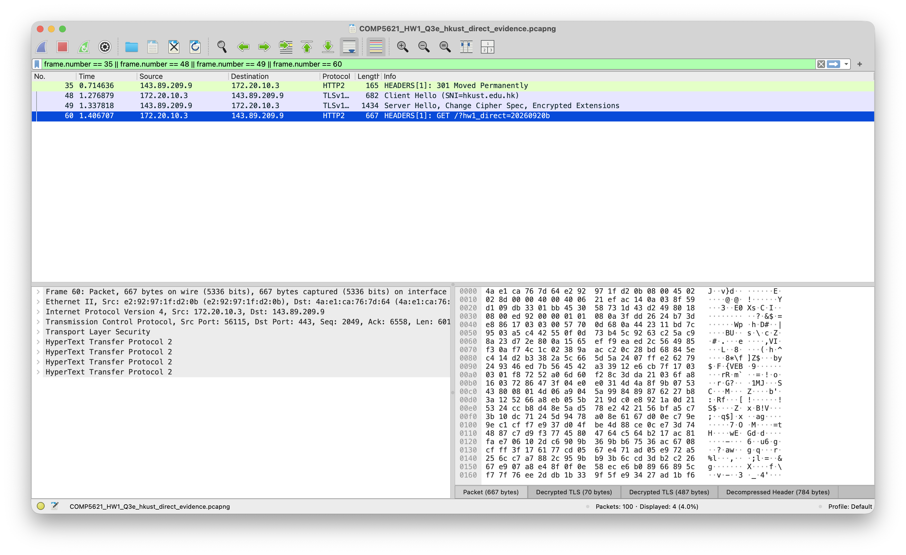
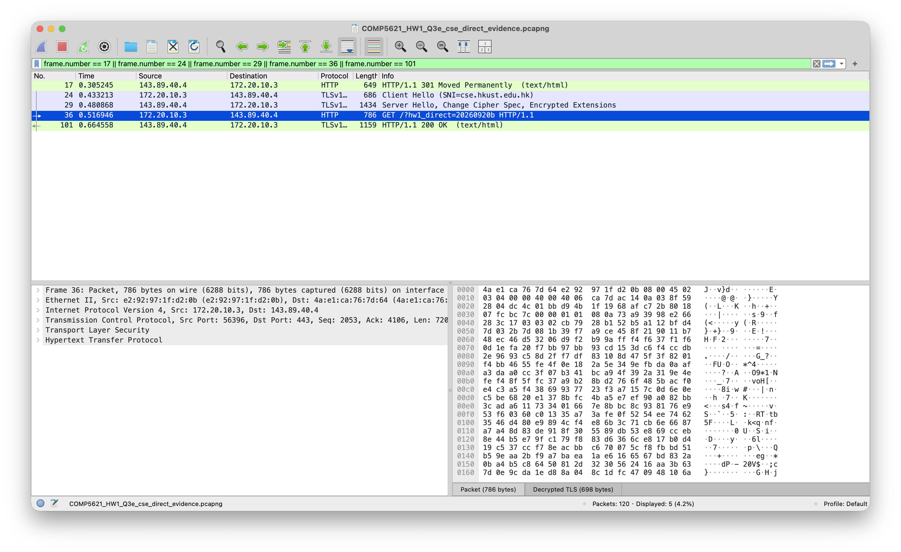

Problem 3. HTTP and Related Application-Layer Protocols (40 points)
(e) Wireshark: HTTP version [8 points]
Using Wireshark, capture traffic while visiting www.ust.hk and www.cse.ust.hk. Determine the HTTP version used to retrieve the main page of each site. For each site, include one screenshot and state the evidence in the capture that supports your answer. If the site redirects, identify the final hostname and examine the connection that serves the main page. Report the version observed in your capture; the two sites may use different HTTP versions.

AThis Client Hello row says SNI=hkust.edu.hk. It identifies the hostname used by this connection.
The selected row is HTTP2 HEADERS[1]: GET /?hw1_direct=20260920b. Wireshark decoded the actual request as HTTP/2.
Client 172.20.10.3 → server 143.89.209.9. Full original screenshot; click to inspect.
www.ust.hk redirects to hkust.edu.hk. A identifies the final host; B establishes observed HTTP/2 on the page request.
Problem 3. HTTP and Related Application-Layer Protocols (40 points)
(e) Wireshark: HTTP version [8 points]
Using Wireshark, capture traffic while visiting www.ust.hk and www.cse.ust.hk. Determine the HTTP version used to retrieve the main page of each site. For each site, include one screenshot and state the evidence in the capture that supports your answer. If the site redirects, identify the final hostname and examine the connection that serves the main page. Report the version observed in your capture; the two sites may use different HTTP versions.

ASNI in this row is cse.hkust.edu.hk.
The selected request explicitly reads GET /?hw1_direct=20260920b HTTP/1.1.
Info reports HTTP/1.1 200 OK (text/html). This is the successful HTML response, not just a handshake.
Client 172.20.10.3 → server 143.89.40.4. Protocol candidates in Client Hello alone do not prove the selected version.
www.cse.ust.hk redirects to cse.hkust.edu.hk. A names the host; B proves HTTP/1.1; C supports the page-response interpretation.
Problem 4. Adaptive Video Streaming with DASH (10 points)
(a) Adaptive rate selection [4 points]
A DASH server stores each 4-second video chunk at three encoding rates: 1 Mbps, 2 Mbps, and 4 Mbps. Before each download, the client estimates the sustainable server-to-client bandwidth. For three consecutive chunks, the estimates are 5 Mbps, 3 Mbps, and 1.5 Mbps. Assume the client chooses the highest available encoding rate that does not exceed the estimate, the actual download throughput equals the estimate, and protocol overhead is negligible.
For each of the three chunks, choose the encoding rate and compute the chunk download time.
Encoding rate measures video data per second of playback. Throughput measures data delivered per second of downloading. First select an available encoding, then compute size and download time.
Available: 124 Mbps
Choose highest ≤ 5 Mbps
Multiply by 4 s of video
Divide by network throughput
Available: 124 Mbps
Choose highest ≤ 3 Mbps
Multiply by 4 s of video
Divide by network throughput
Available: 124 Mbps
Choose highest ≤ 1.5 Mbps
Multiply by 4 s of video
Divide by network throughput
All downloads finish within 4 s of playback. At 3 Mbps choose 2, not 3: only 1, 2 and 4 Mbps encodings exist.
Problem 4. Adaptive Video Streaming with DASH (10 points)
(b) Why rate adaptation matters [3 points]
Suppose the client always selects the 4 Mbps representation. Compute the download time during the 3 Mbps and 1.5 Mbps bandwidth periods. Explain why repeated downloads that take longer than the 4-second playback duration can cause playback stalls and why DASH changes the encoding rate.
Keeping 4 Mbps encoding fixes every 4 s chunk at 16 Mbit. Playback continues while a chunk downloads; the buffer must cover the difference.
B₀ is an unspecified initial reserve. Δ = 1.33 s or 6.67 s here, assuming uninterrupted playback and sequential downloads. Once reserve is exhausted, playback stalls; one slow chunk need not stall immediately.
Problem 4. Adaptive Video Streaming with DASH (10 points)
(c) Buffering and CDN [3 points]
Explain how a client-side playout buffer helps when network delay or throughput varies. State one reason why a nearby CDN node can improve streaming performance.
Storage metaphor: the buffer is memory in the player, not a physical box on the network.
The buffer absorbs short-term timing variation. If delivery stays below consumption, the reserve still drains and eventually playback stalls.
A shorter or less congested route can reduce RTT and improve chunk delivery. Proximity is a potential improvement, not a guarantee of capacity.
Buffering handles brief variation; CDN placement can improve delivery. Neither cures an indefinitely sustained rate deficit.